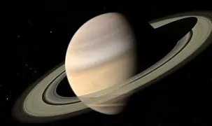

Saturne est la sixième planète du Système solaire par ordre d'éloignement au Soleil, et la deuxième plus grande par la taille et la masse après Jupiter. C'est une planète géante gazeuse comme Jupiter. Son rayon moyen de 58 232 km est environ neuf fois et demi celui de la Terre et sa masse de 568,46 × 1024 kg est 95 fois plus grande. Orbitant en moyenne à environ 1,4 milliard de kilomètres du Soleil (9,5 unités astronomiques), sa période de révolution vaut un peu moins de 30 années terrestres tandis que sa période de rotation est estimée à 10 h 33 min.
Elle est bien connue pour son système d'anneaux constitué principalement de particules de glace et de poussières. Saturne est la planète possédant le plus grand nombre de satellites naturels, avec 274 observés contre les 95 lunes de Jupiter, associés à des centaines de satellites mineurs. Sa plus grande lune, Titan, est la deuxième plus grande du Système solaire (derrière Ganymède, lune de Jupiter, toutes deux plus grandes que Mercure) et c'est la seule lune connue à posséder une atmosphère. Une autre lune remarquable, Encelade, émet de puissants geysers de glace et serait un habitat potentiel pour la vie microbienne.
Saturne est très probablement composée d'un noyau de silicates et de fer entouré de couches constituées en volume à 96 % d'hydrogène qui est successivement métallique puis liquide puis gazeux, mêlé à de l'hélium. Ainsi, elle ne possède pas de surface solide et est la planète ayant la densité moyenne la plus faible avec 0,69 g/cm3 — soit 70 % de celle de l'eau. Un courant électrique dans la couche d'hydrogène métallique génère une magnétosphère, la deuxième plus grande du Système solaire mais beaucoup plus petite que celle de Jupiter. L'atmosphère de Saturne est généralement terne et manque de contraste, bien que des caractéristiques de longue durée puissent apparaître comme un hexagone à son pôle nord. Les vents peuvent atteindre 1 800 km/h, soit les deuxièmes plus rapides du Système solaire après ceux de Neptune. Elle a été explorée par quatre sondes spatiales : Pioneer 11, Voyager 1, Voyager 2 et Cassini-Huygens (du nom de deux astronomes ayant grandement fait avancer les connaissances sur le système saturnien au XVIIe siècle).
Pour plus d'information, cliquez ici